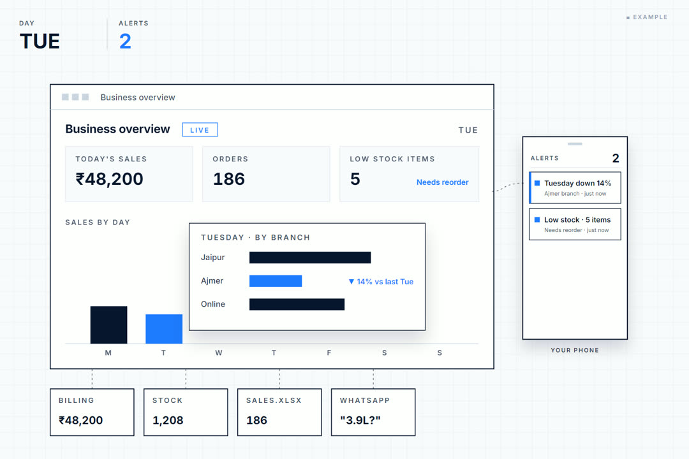
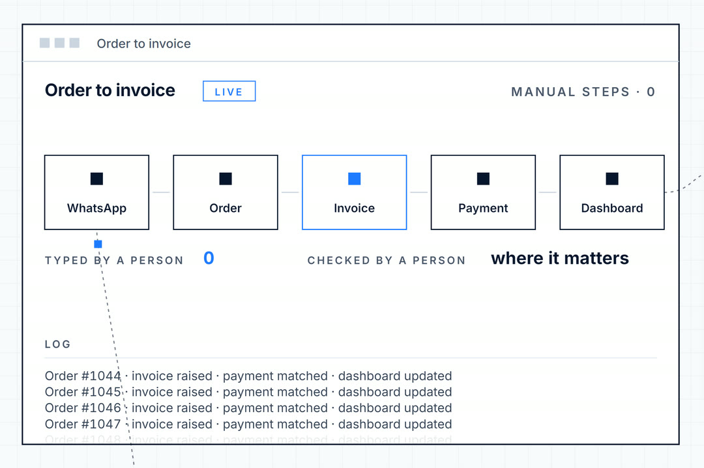
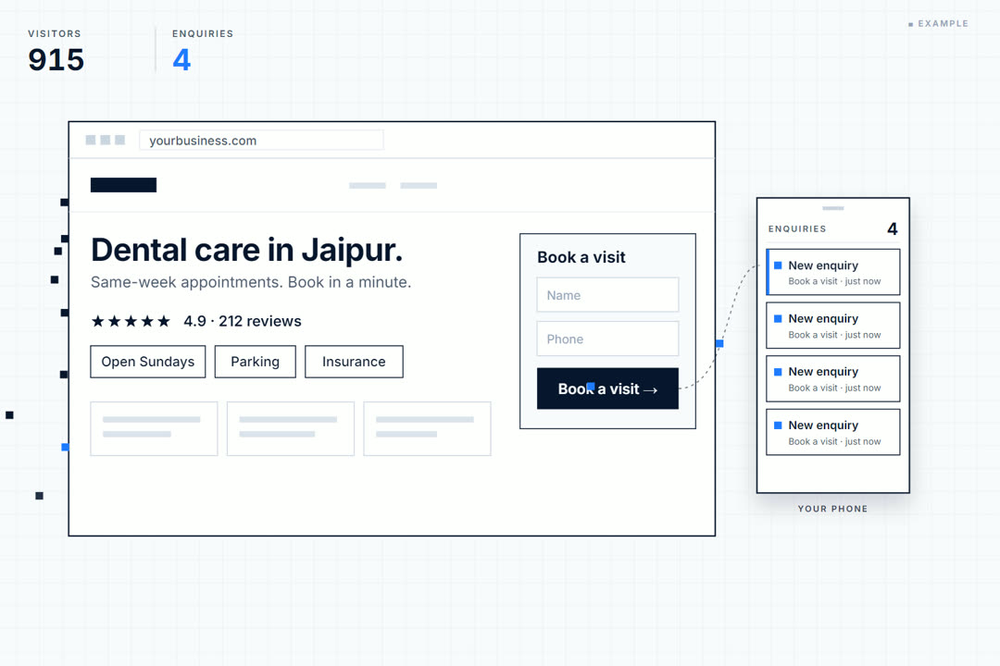

Your business shouldn’t need you to run every little thing.
Website development, workflow automation, AI chatbots and business dashboards for growing businesses in Dubai, the UAE and India — at a fixed price, in accounts you own.
For growing businesses that have outgrown spreadsheets, manual processes and disconnected tools:
A systems partner for businesses that have outgrown spreadsheets.
Based in Udaipur and working with growing businesses across India and the UAE, we replace fragmented, manual processes with connected systems — websites, workflow automation, AI chatbots and business dashboards — built around the tools you already use rather than a platform you would have to move to. You keep running the business. It gets easier to understand, operate and scale.
- Built for
- Growing businesses past the point where one person can hold every process in their head, but not yet running an in-house technology team. Retail and multi-store, distribution and wholesale, manufacturing, clinics, professional services.
- How we work
- The first conversation is short and free, and often ends with us telling you what not to automate. Then a fixed price before any work starts, a first piece live in four to six weeks, and everything running in accounts you own.
- What you keep
- The logins, the data, the systems. If you stop working with us, nothing switches off. We hand over written instructions and train whoever will be using it, so most clients need us less than they expect to.
See. Automate. Grow.
Three kinds of work, three pages. Find the week that looks like yours and go straight to what we would build for it.

Dashboards & analytics
One live view of sales, stock, cash and customers, fed from the systems you already run.
- The weekly report takes a day to assemble
- Two people, two different numbers
- You see the total, never the reason

Automation & AI
The repetitive steps between your tools done without a person, and an assistant that answers from your own data.
- The same order typed into three systems
- Follow-ups that depend on someone remembering
- Your best people answering the same question all day

Websites & digital
A fast site built around the questions a buyer asks, with every enquiry wired straight to your phone.
- The site gets compliments, not enquiries
- Buyers look you up, then never call
- Price and timelines are a mystery
One week of your business, from noise to a decision.
Every business already produces this data. What a system changes is what happens to it between Monday and the moment somebody acts on it.
It exists. It is just everywhere.
Orders in WhatsApp. Stock in a sheet. Payments in the billing software. Every number your business needs already got created — it just never got put next to anything else.
One place, one definition.
The first job is the boring one, and it is the one that matters: get it into a single place, and agree what each number actually means. Half the arguments in a business are two people using one word for two different things.
A week stops being a list.
Once the same numbers sit on the same timeline, a week has a shape. Not a report somebody has to read — a line anybody recognises in a second.
The shape is the insight.
Weekend trade is carrying the week and midweek is soft. Nobody ran an analysis to find that. It is simply visible now, every day, without anyone preparing anything.
And then something happens about it.
This is the part most dashboards skip. Stock crosses a level and the reorder drafts itself. An invoice ages past thirty days and the reminder sends. The insight stops waiting for someone to notice it.
What’s not working right now?
Tell us what is taking too much time, costing you enquiries, or hiding what is really happening. We’ll come back with the first thing we would fix and what we would build. No sales pitch, no obligation.
Thanks — we’ll read this today.
Expect a reply within one working day with the first process we’d improve. In a hurry? Message us on WhatsApp →